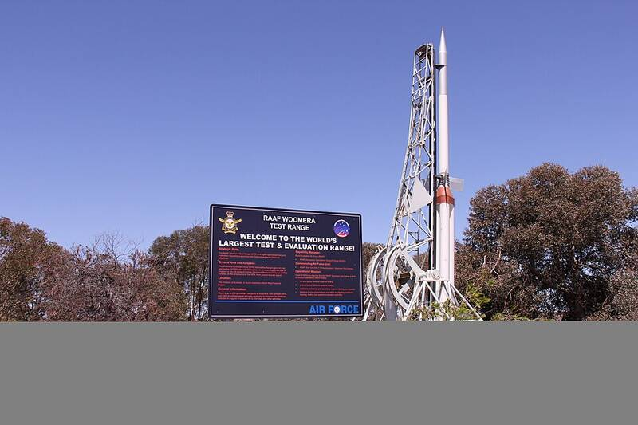

Woomera Range
South Australia

One of the world's largest weapons and rocket test ranges, used by Australia, the UK, and the U.S. since 1947. 1
Open in the interactive Watcher
Sources
- RAAF Woomera Range Complex Wikipedia
South Australia

One of the world's largest weapons and rocket test ranges, used by Australia, the UK, and the U.S. since 1947. 1
Open in the interactive Watcher